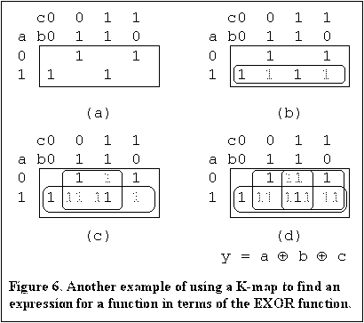

Boolean algebra in terms of the exclusive-OR operator - Part 1
- Introduction
- Why ExOR algebra should be an integral part of Boolean algebra
- The ExOR algebra theorems
- Duality in the ExOR theorems
- Alternative representation of the basic theorems
- Canonical forms for the ExOR logic
- An ExOR function that is the same as the AND, OR, form
- The transposition theorem
- Plotting the exclusive OR operator on a K-map
- Examples of using a K-map to find ExOR representations of logic equations
- Conclusion
- Buy a Book
Note: You can use this list of contents and the symbols  and
and  to navigate through this
document.
to navigate through this
document.
Figure 1 "The 16 possible binary operators and the 4 possible unary operators." replaced on 4 December 2001.
 Introduction
Introduction
I remember once having a book on switching circuit theory that developed its subject in terms of the exclusive-OR (ExOR) operator rather than the more usual inclusive-OR (InOR or just OR) operator. (You may recall that the ExOR operator includes one or the other of two inputs but not both, whereas the InOR includes both inputs as well). Over time the book has become lost. However, since that time Boolean algebra based on the ExOR operator appears to have been completely ignored in popular books on digital design theory.
This paper will demonstrate the following points:
- That a complete Boolean algebra can be developed in terms of the ExOR and AND operators.
- That this algebra is a necessary part of Boolean algebra and augments rather than replaces the more familiar algebra based on the OR operator.
- That this algebra has both map methods and algebraic simplification methods for Boolean functions that are no harder to use than the corresponding methods for InOR algebra.
- That this more complete algebra has useful applications if you are designing with programmable logic devices.
If you have come to this page from the Boolean Algebra pages then some of the preliminary material presented here will already be familiar to you. If you have not yet read the Boolean Algebra pages then you will find some additional material in those pages relevant to the material presented here. In particular I derive all the preliminary theory needed for this subject without undue formality.
A motivation for studying ExOR algebra is that in general a significant proportion of logic functions can be represented with fewer terms if ExOR gates are used in the representation of the functions. Many CPLDs contain an ExOR gate in their macrocells, therefore a systematic way of making the best use of these ExOR gates should be part of every digital designers stock in trade.
In this paper I will go as far as describing how ExOR and OR operators can both be dealt with on the same conventional Karnaugh map (K-map). My approach does not depend on or make use of methods described in the literature as Reed-Muller algebra or the pattern recognition method sometimes seen. This paper is a condensed version of a more complete paper on this subject that appeared in "Electronics World magazine, February 1999 edition, pages 113 - 118". The proofs of the basic theorems can be found in the Boolean Algebra pages or you can find them in the Electronics World article. Algebraic simplification is covered in Part 2 of this article.
The ExOR operator conforms to the mathematical requirements of linearity. The properties of this result leads to a whole branch of applications particularly in communications systems. However, the emphasis in this paper is on the development and application of ExOR algebra for the design of digital circuitry. Consequently this paper will concentrate on the development of ExOR algebra as an essential part of Boolean algebra for the design of digital circuits and will not go into the communications applications of this operator.
A link to a comprehensive source of references on this subject can be found at the end of Part 3. You can also find a short list of the articles there that I had available to me in 1966 when I first became interested in this subject.
 Why ExOR algebra should be an integral part of Boolean algebra
Why ExOR algebra should be an integral part of Boolean algebra
Boolean algebra has variables and constants. We can think of these variables and constants as having only two values, which we will take as 0 and 1. In this paper the discussion is limited to two valued Boolean algebra. We can assign meanings to these values when we consider the practical implementation of the Boolean functions that represent a finished circuit. We can develop the algebra independently of any physical meaning that we attach to the algebra.
Digital circuitry has a variety of basic gate structures such as AND gates, OR gates, NAND gates and so on as well as inverters. The AND, OR and other gates can be thought of as binary operators and inversion as a unary operator, due to the number of inputs applicable in each case. If you consider the truth tables for the basic gate circuits you can construct a total of 16 of these truth tables. Similarly there are potentially 4 unary operators. A complete list of all the possible binary and unary operators for two valued (ie. binary) Boolean algebra is shown in Figure 1.
The original Figure 1 that appeared on this page has been replaced with a new Figure 1 shown opposite. This has been drawn up to more clearly identify the distinctly different binary operators of Boolean algebra. This has been done by showing the equations for each of the sixteen possible cases of binary operators. Figure 1 shows that after removing the two constants and the single variable cases there are four variations of AND functions, four variations of OR functions and two variations of ExOR functions. The number of variations of the AND OR functions are due to the number of variations of the exponents of the variables. There are four variations of the exponents of two variables. The NAND (1110) and NOR (1000) operators are seen to be included in the variations of the OR and the AND operators respectively. There are only two variations of the ExOR functions due to the even/odd characteristics of these functions. There are therefore three distinctly different binary operators of Boolean algebra, the AND, OR and ExOR operators. Greater details of these considerations are given in the paper on Boolean Algebra - Page 1 found on this site.
Boolean algebra as commonly presented is constructed from only two of these three operators. To be more logical we should include the ExOR algebra to make Boolean algebra more complete. The ExOR algebra becomes a second complete Boolean algebra which can be used in conjunction with InOR algebra. By a complete Boolean algebra is meant that any arbitrary function of Boolean variables can be constructed from it. The way that this will be established is through the canonical expansions for the algebra. You can also see from Figure 1 that there is only one unary or inversion operator for this algebra.
All Boolean functions have an inverse function. For example if f is a Boolean function, then 1 f is its inverse. The two ExOR functions are inverses of each other and the AND and OR functions in Figure 1 are inverses of each other in pairs, a circumstance that leads to the duality in InOR algebra.
We could conceivably make other algebras from the available operators but that is something you can try out yourself if you wish. This paper will mainly concentrate on the ExOR algebra constructed together with the AND operator. A third algebra can be constructed with the inclusive-OR operator together with the inverse of the ExOR operator. See the added note at the end of part 2 of the Boolean Algebra Revisited pages for details.
First we will look at the InOR theorems listed below. There is a group of four theorems for each binary operator made up by applying a variable to one input and 0, 1, the variable or the variable inverted as the second input. Then there are the commutative, associative and distributive laws, then the inversion theorem and finally simplification relationships.
Summary of the theorems for the AND and InOR operators
| A & 0 = 0 | A + 0 = A | Basic theorems |
| A & 1 = A | A + 1 = 1 | |
| A & A = A | A + A = A | |
| A & A' = 0 | A + A' = 1 | |
| AB = BA | A + B = B + A | Commutative law |
| A(BC) = (AB)C | A+(B+C) = (A+B)+C | Associative law |
| A(B+C) = AB+AC | A+BC = (A+B)(A+C) | Distributive law |
| The inverse of a logic function can be obtained by replacing all + operators with & operators, replacing all & operators with + operators, priming all unprimed variables and unpriming all primed variables. | DeMorgan's theorem | |
| A + AB = A | A + A'B = A + B | Simplification relationships |
When we look at the ExOR theorems we would expect to find some characteristic differences. The corresponding theorems for the ExOR operator are listed below.
Summary of the theorems for the ExOR operator
The ExOR operator is related to the InOR operator by: x y = xy' + x'y. ( is the symbol for the ExOR operator).
| T1. x x = 0 | T2. x x' = 1 | Basic theorems |
| T3. x 0 = x | T4. x 1 = x' | |
| T5. (x y)' = x' y = x y' | T6. x' y' = x y | Inversion theorems |
| T7. x y = y x | Commutative law | |
| T8. (x y) z = x (y z) | Associative law | |
| T9. x(y z) = xy xz | Distributive law | |
| T9'. x(y z) = (x'+y) (x'+z) | Distributive law with OR function | |
| T10. If: f = g h and gh = 0, then f = g + h | Disjunction theorem | |
| T11. If: f = g h, then g = f h and h = g f | Transposition theorem | |
The duality principle which states that "Given any of the basic theorems of Boolean algebra, changing OR operators to AND operators, AND operators to OR operators and changing 0s to 1s and 1s to 0s where these occur leads to another of the basic theorems" applies specifically to the AND and OR operators.
Take a look at the summary of the theorems for the ExOR logic. Apply the inversion theorem T5 to theorem T1 and you get theorem T2. Do the same with T3 and you get T4. And the same applies when you go the other way round. This makes T1, T2 and T3, T4 dual pairs.
Now apply the transposition theorem T11 to T1 and you get T3. Apply theorem T11 to T2 and you get T4. Once again the same applies when you go the other way round. This makes T1, T3 and T2, T4 dual pairs. ExOR logic has a double duality property which makes the ExOR a very flexible system of logic. Any of the basic theorems can be transformed into any of the others by either inversion and/or transposition.
A consideration that we will need shortly are the following alternative representations of the basic theorems. The basic theorems are frequently labelled to reflect the duality properties.
Alternative expressions for T1 and T3 are:
| T1a. | x x ... x = 0, for an even number of x |
| T3a. | x x ... x = x, for an odd number of x, or |
| T1b. | x y z ... = 0, if an even number of variables x, y, z ... have the value 1 |
| x y z ... = 1, if an odd number of variables x, y, z ... have the value 1 |
T10 can be used for expressing a function, given in terms of the OR operator, in terms of the ExOR operator. The function in terms of the OR operator is expanded to minterm form, so that all terms are disjoint (ie the product of any two terms is 0). The + operators can then be replaced with operators.
This means that any function can be expressed in ExOR form directly from its truth table or K-map. A canonical form for the exclusive OR operator is therefore with three variables:
C1. f(abc) = a0a'b'c' a1a'b'c a2a'bc' a3a'bc a4ab'c' a5ab'c a6abc' a7abc
where: a i = 1,0 depending on whether the ith term is present or not. Expressions like this are sometimes referred to as Exclusive-OR Sum-Of-Products or ESOPs in the literature.
An alternative canonical form (found by expanding all primed variables with T4 (x' = x 1) multiplying out and cancelling duplicate terms with T3 and T1) is:
C2. f(abc) = b0 b1a b2b b3c b4ab b5ac b6bc b7abc
where: bi = 1,0 depending on whether the ith term is present or not.
You can generalise these expressions for an arbitrary number of variables using sigma notation. However, I will simply assume that you can get the idea from the above representations. Other canonical forms are possible, for example you can replace all unprimed variables with primed variables instead of replacing all primed variables with unprimed variables. However, the two canonical forms shown are sufficient for the purpose of this paper.
The canonical expansions imply that any Boolean function can be expressed in terms of the AND and ExOR operators. ExOR algebra is therefore a complete Boolean algebra.
The majority function is true in both InOR and ExOR form.
| ab ac bc = ab + ac + bc | Prove it for yourself by expanding out the left hand side. |
Hint: Use the disjunction theorem.
The transposition theorem
A theorem that gives exclusive OR logic an unusual degree of freedom is T11.
By means of this theorem any given term or expression can be made to be a part of any other expression of the same variables.
For example, let x = ac' a'bc and suppose that the term h = ac is to be made a part of this expression.
| Then, | g = x h = ac' a'bc ac = a(c' c) a'bc = a a'bc. |
| Therefore, | x = g h = a a'bc ac. |
As a check, this could have been obtained in this simple case directly from the given expression for x by replacing c' with (1 c) and expanding by T9 the distributive property.
You might want to use this idea if you want to find out if a single variable, with a single ExOR operator will give an expression with fewer product terms than the original expression. Let p be the single variable in function f, then evaluate g = f p. If this expression or its inverse has fewer product terms as required then g is the required result. ie. f = g p or f = g' p'. You would need to evaluate g for each variable in turn and take the best result, or you might stop with the first good result if any. The Altera MaxPlus II system makes use of this result.
| Ask your school or Uni library to purchase a copy of my book "Introduction to Digital Circuit Theory" (ISBN: 978-0-9581894-1-5). |
The idea described in the previous paragraph is not limited to single variables, you can apply the idea to any desired function of the same variables. This theorem makes a good starting point for multi output circuit design with ExOR functions. Another example of the use of this theorem is to construct a Gray code to binary code converter circuit. Refer to the "Electronics World" article for the details of this example. I also mention it briefly in the Boolean Algebra pages.
Problem: Express the function: f = ac + b'c + a'bc' in ExOR form.
If you are observant you could solve this problem as follows:
f |
= ac + b'c + a'bc' |
| = c(a + b') + a'bc' | |
| = c(a'b)' + (a'b)c' | |
| = c a'b |
There are many cases like this for functions of three variables. However, often this approach may not be so easy to carry out. Fortunately the K-map technique can be readily adapted for the purpose.
First consider the ExOR function plotted on a K-map as shown in Figure 2. The K-map technique for the ExOR function depends on T10 and the extended forms of T1 and T3.
Plotting the variables x and y individually on the map results in minterm xy being plotted twice, consequently by the extended form of T1, this term will disappear from the ExOR form.
Similarly by the extended form of T3, where the minterm is plotted once or an odd number of times it will be retained.
Generalising this observation for the ExOR form gives the rules:
Any minterm that is to be included in the function must be plotted an odd number of times.
Any minterm that is to be excluded from the function must be plotted an even (or zero) number of times.
Two examples of this result are shown in Figure 3.
The first result is the example given at the start of this section. You can see that one minterm a'bc has been plotted twice and is therefore excluded from the equation.
The second example is the function that had the same form for the ExOR operators as it had for the AND, OR, Invert operators. Here one term has been plotted three times and is therefore included in the function. With a little practice the ExOR forms can be readily found for three variable functions and sometimes for four variable functions. Figure 4 shows two examples of four variable ExOR functions.
A procedure for using the K-map to find opportunities for simplification of a logic expression by using an ExOR gate (by inspection) is to look for a grouping of 1s that could be simplified if an extra square or squares between them are filled in with 1s to combine the terms. This is applicable if only one ExOR is needed to represent the function. The following examples show a more general approach where more than one ExOR is needed.
To plot a function given in exclusive OR form, simply plot individual terms by placing 1s in all squares for the term and cancel all squares that have an even number of 1s.
Don't care conditions are treated in the K-map approach the same way as for the inclusive OR case, the don't care term is either used or not as required. For the ExOR function don't care terms can be plotted an even or odd number of times.
In the case of f1 in Figure 4 the minimal ExOR form of the equation may not be so easily found by inspection. Here we would like to have an algebraic simplification procedure. An easy to use and systematic procedure is described in part 2 of this paper.
Examples of using a K-map to find ExOR representations of logic
equations
Two more examples are shown in Figures 5 and 6 where more than one ExOR is required to represent the function. These Figures shows the step by step procedure to be followed.
Consider the function plotted on the K-map shown in Figure 5a. We might start by plotting variable a as shown at 5b. This covers three of the 1s in the map but places an additional 1 at position abc. (The additional 1s in Figures 5 and 6 are shown greyed). We might next plot variable c as shown at 5c. This cancels the extra 1 at abc, covers the 1s at position a'bc and a'b'c but cancels the 1 at position ab'c. To regain a 1 at this position we place an additional 1 there and map that position as shown at 5d. This gives the final result as shown below the K-map at 5d.
From a practical point of view we might implement the resulting expression as follows (since there is generally only one ExOR function available in a CPLD macrocell):
y |
= a c ab'c |
| = a c(1 ab') | |
| = a c(ab')' | |
| = a c(a' + b) | |
| = a (a'c + bc) or, | |
| = a' (c(ab')')' |
The last line is for NAND gate implementation (a NAND gate has the form (ab)' )
Another example is shown in Figure 6. The same steps are taken as was done in Figure 5. The function is shown plotted on a K-map at 6a. We start as before by plotting variable a as shown at 6b, since this looks like a suitable starting point. This covers two of the 1s in the function but introduces two additional 1s. Next we plot variable b as shown in 6c. This cancels one of the unwanted 1s that were introduced in 6b but also cancels one of the 1s that we wanted to keep and introduces an additional 1 at a'bc. Finally we add the plot for variable c. As you can see this restores the 1 at abc covers the 1 at a'b'c and cancels the unwanted 1s at a'bc and ab'c. The final (well known) result is shown under the K-map at 6d as it was in Figure 5.
To summarise what we have done to find ExOR forms of functions using the K-map: We started by making an arbitrary choice of first plot, which covered some of the minterms but possibly introduced unwanted minterms, we then made another choice of mapping which covered more of the required minterms and possibly eliminated some of the unwanted minterms and we continued the process until we had covered the complete function. The method is somewhat heuristic but at least in general the method gives the result in a direct way for functions with a small number of variables.
The last example will show a slightly different way of using the K-map. Assume that you entered the following expression into your CPLD Hardware Description Language software:
y = ac'd' + abc + ab'd + b'c'd + a'b'cd'
The compiler in your CPLD software has came up with the following expression for this logic function and you would like to confirm that it is the same function:
y = a (b'cd' + abc'd + a'b'c'd)
The K-map shown in Figure 7 confirms the identity. Note that we can plot all the terms in parenthesis as a function and use this as a whole with the ExOR approach with the term a. A reduction of five product terms to three is achieved with this function. The use of the K-map is obviously a lot less work than expanding out the ExOR function.
This is as far as we will go in this paper. However, it is possible to treat the simplification of ExOR forms of equations by a systematic algebraic procedure. This procedure should be used for functions with four or more variables if the minimal form of the function is to be guaranteed. The algebraic simplification procedure is described in part 2. This paper has presented all of the preliminary requirements for the algebraic method of simplification of ExOR functions. As a clue, you may recall that simplification methods for the AND, OR invert algebra depended on making systematic use of the relation: x + x' = 1 and the distributive theorem. For the ExOR algebra we will make systematic use of the relation: x x' = 1 and a few rules.
This paper has demonstrated that a complete Boolean algebra can be developed in terms of the exclusive-OR operator in place of the inclusive-OR operator. Examples have been given that demonstrate the use of this approach to Boolean algebra. The exclusive-OR algebra adds to and does not replace inclusive-OR algebra. The algebra is complete with simplification methods including the use of conventional Karnaugh maps. The method of using a conventional Karnaugh map for dealing with exclusive-OR functions was shown and illustrated with examples.
Buy the second edition of the book entitled:
"Introduction to Digital Circuit Theory" (ISBN: 978-0-9581894-1-5). The book is
in the form of a monograph with comb binding, card back and clear cover in A4 format. The
current revision includes a number of inadvertent error corrections. The single copy price
is $39.95 (Australian dollars), which includes all currency fees and airmail charges if
purchased with the Buy Now link. PayPal will carry out the conversion of your
currency to Australian currency in a secure transaction and email me your order. Please
follow this link |
Boolean Algebra - Page 1 OR Navigation menu at the top of the page OR Exclusive-OR logic Part 2:
(Copyright) David N. Warren-Smith, CPENG
Digital Logic Systems, South Australia
Modifications: 3 March, 1999, 6 October 2000, 25 January 2002, 16 January 2003.